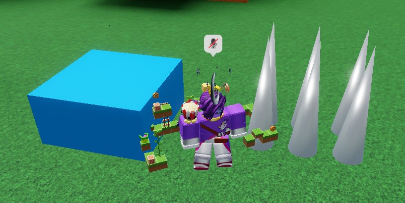
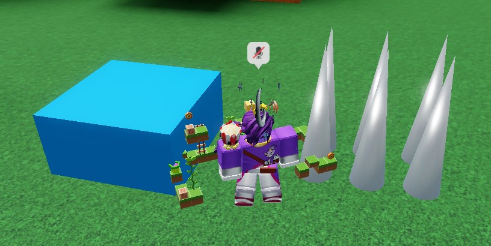

First things first, *looks at Theme Park Tycoon 2 Workshop* *cries at the work and dedication of more experienced builders* To be honest, I'm not fond of building custom things much, as I want to inspire players whose parents won't let them buy Robux. I may submit some niche builds, such as of Sonic characters.
Anyway, I got the following props done: Star Post (redid the whole thing), spikes, springs, and totem poles. The totem poles were fun to make, actually! Building may be tedious, but I'd prefer that over trying to debug an extremely oblique error in my coding exercise, which is the main reason why I didn't progress as much as I could've today.
(I also found screenshots taken during night in-game to be eye-straining, so from now on, such will be taken during build mode with night and cave vision.)

 

(Suggestion to Den_S: Please do not get rid of custom size when picking primitives with that.)

(The reason the image is smaller than usual is because I screenshotted with the Roblox window being smaller. There's also a red spring, so don't worry.)


Reference images I used for the spring:
{kind=link}
{kind=link}
Reference images I used for the totem poles:
Here's a funny message I got in the chat:{kind=link}
{kind=link}

Speaking of potentially building Sonic character props and submitting them to the Workshop, I was working on a large Silver the Hedgehog statue earlier this year. It doesn't look appealing, so I may create a new statue, which will also be smaller.

Green Hill Zone ride as of May 25, 2024

(Turns out, the object limit for ride designs would not fit in everything, so RIP every possibility of y'all getting to have your own copy of Green Hill Zone.)
Besides being required to do coding practice by my father and drawing concept art for something, today was another Saturday of Theme Park Tycoon 2.
I didn't want to work on the volcano because I wanted to finish my Green Hill Zone ride and perhaps publish it as a ride design. First, painting.


(I tried my best with the advanced track editor for the roller coaster. It's fun to use after you get comfortable, but you'll need to test your track a lot.)
The first props I added were characters, including the enemies, because they are the most prominent and I don't want to take up their potential spots with other props. Because I didn't want to overload the value of the ride with intricate character models, I used the classic method of using image panels for the characters. (Mini-rant: Finding satisfactory images in the Roblox library Creator Store is a chore.) Here, Sonic and his friends greet you at the entrance. (Cry about it, Sonadow Wiki.)

At the entrance of my sandbox park, I have a sign which states that if I have time, I can accept building requests on other parks if they're not too intensive. Today, I did someone's request to build the Grand Canyon; well, not actually, because building the entire thing would take too much work and thus time. Instead, I gave the player starting terrain to model after. They loved what I did!


Along with that, it was time for the fun part: Building 3D props out of primitives. I first built the item box styled after the one in the first Sonic game.

Reference images I used for the item box:
{kind=link}
{kind=link}
At this moment, I'm still working on the checkpoint Star Post, also styled after the one in the first Sonic game. This one was tougher than the item box, and I'm nervous about how to deal with the top part.

Another mini-rant: While there are plenty of quality-of-life features when it comes to building with primitives in Theme Park Tycoon 2, it still can be more cumbersome than building in Roblox Studio or user-friendly CAD software. For instance, I want objects to perfectly align with each other and sit on top of each other without teeny tiny gaps. Also, I just realized that cone-like shape on the Star Post was most likely intended to be smooth instead of tiered like cakes, in spite of the pixel art. Also considering the Start Post is MASSIVE, I may redo the whole thing.
Reference images I used for the Star Post:
{kind=link}
{kind=link}
{kind=link}
{kind=link}
Green Hill Zone ride as of May 18, 2024:

(It's still not as fast as Formula Rossa, but that would have been too short and especially nauseating of an experience.)
Here's the start of My Theme Park Tycoon 2 Buildlog. Theme Park Tycoon 2 is one of my favorite Roblox games overrall, and because I both have big plans for this game and want to practice a variety of skills, especially creativity, patience, and persistence, I'm going to spend every full Saturday of 2024 summer building in this game. It would be rather worthless to build without showing them off online, so why not do it in form of a blog here?
First off, I'd like to say that today I spent 498 Robux on the extra expansion plots gamepass (yes, I evaluated all my life choices), so I could have ample room for my sandbox theme park (think: Minecraft Creative Mode), which just crossed $10 million today.
Second, I was going to start my day by further sculpting the volcano. Mini-rant: My perfectionist tendencies want it to look so rugged, and I keep endlessly messing around with the vertices and corners on the same face of the volcano. And I really need to complain: Manipulating terrain at night is a pain in the neck.

I decided to have another build to work on during the night, but I ended up getting entirely sidetracked by it: A build of Green Hill Zone from Sonic the Hedgehog, complete with a roller coaster. Started with the landscape out of primitives; soon there will be props, including handmade custom ones.


(I colored those small cliffhanging platforms randomly until realizing they needed to be aligned with the main landscape's patterning. Also, I had a bad burnout due to how I wanted my build to be great in spite of me being amatuer. Well, always take it easy.)
An image of Amy riding Green Hill Zone because why not?:
.png)
Reference images for Green Hill Zone build:
{kind=link}
{kind=link}
{kind=link}